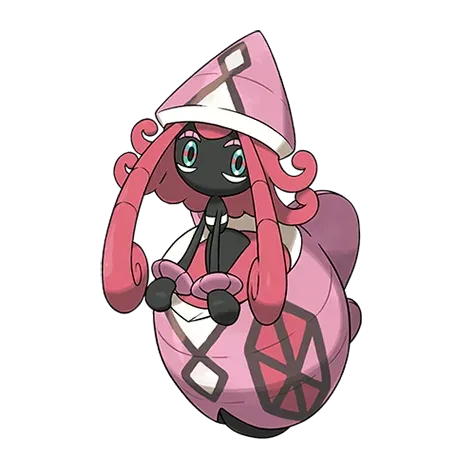
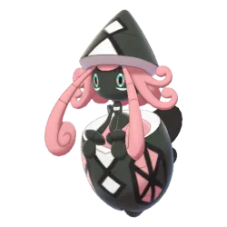

Tapu Lele – What This Raid Boss Is
Tapu Lele is a Legendary Pokémon from the Alola region.
- Type: Psychic / Fairy
- Known as one of the Island Guardians
- Strong offensive stats, especially Special Attack
1. Why Tapu Lele Matters
A. Strong Psychic-Type Attacker
Why:
- High attack stat
- Strong moves like Confusion & Future Sight
Useful against:
- Fighting-type raid bosses
- Poison-type Pokémon
B. Fairy-Type Utility
- Fairy typing gives it value vs:
- Dragon types
- Dark types
C. Niche but Valuable Role
Tapu Lele isn’t always #1, but:
- It fills a unique Psychic + Fairy combination
- Useful when you lack top-tier alternatives
D. Shiny & Collection Value
- Shiny Tapu Lele is available
- Highly desirable for collectors
2. Difficulty Level
Overall Difficulty: ⭐⭐⭐⭐☆ (Hard)
Why It’s Challenging:
High Attack Power
- Hits hard with Psychic & Fairy moves
- Can quickly damage your team
Tricky Typing
- Psychic/Fairy combination:
- Not many easy double weaknesses
- Requires specific counters
Decent Bulk
- Not extremely tanky
- But survives long enough to pressure players
Recommended Players
| Players | Difficulty |
|---|---|
| 1 | Impossible |
| 2 | Very hard |
| 3 | Hard |
| 4-5 | Comfortable |
| 6+ | Easy |
Dangerous Moves
Watch out for:
- Psychic moves
- Fairy moves
Tapu Lele Moveset Guide
Fast Moves
Fast moves determine energy generation + DPS flow, especially important in raids.
Fast Moves Table
| Move | Type | Damage | Energy Gain | Notes |
|---|---|---|---|---|
| Confusion | Psychic | High | Medium | Strong DPS, slower |
| Astonish | Ghost | Low | High | Weak overall, rarely useful |
Best Fast Move:
- Confusion
- Much higher damage output
- Better synergy with Psychic charged moves
Charged Moves
Charged moves define burst damage + raid effectiveness.
Charged Moves Table
| Move | Type | Damage | Energy | Notes |
|---|---|---|---|---|
| Psyshock | Psychic | Low | Low | Fast spam move |
| Future Sight | Psychic | High | High | Best DPS option |
| Focus Blast | Fighting | Very High | High | Coverage vs Steel |
| Moonblast | Fairy | High | Medium | Balanced Fairy move |
Best Charged Moves:
- Future Sight → Best for raids
- Moonblast → Good Fairy STAB option
Elite Moves
Elite Moves require Elite TM
Elite Moves Table
| Move | Type | Damage | Energy | Notes |
|---|---|---|---|---|
| Nature's Madness | Fairy | High | Medium | Balanced Fairy move |
Best Elite Moves:
- Nature's Madness → Best for raids
Raid Boss Moves
When Tapu Lele appears as a raid boss, it can use these moves.
Raid Boss Moves Table
| Category | Moves |
|---|---|
| Fast Moves | Confusion, Astonish |
| Charged Moves | Psyshock, Future Sight, Focus Blast, Moonblast |
| Elite Moves | Nature's Madness |
Dangerous Moves
These moves can wipe your team quickly depending on your counters.
Dangerous Moves Table
| Move | Type | Why It’s Dangerous | Counters Affected |
|---|---|---|---|
| Future Sight | Psychic | Extremely high damage | Poison, Fighting |
| Moonblast | Fairy | Strong STAB damage | Dark, Dragon |
| Focus Blast | Fighting | One-shot potential | Steel, Rock |
| Confusion | Psychic | High fast move damage | General DPS pressure |
Key Threat Analysis
Most Dangerous Combo:
- Confusion + Future Sight
Anti-Counter Move:
- Focus Blast destroys:
- Metagross
- Tyranitar
Strategy Insight
- Use Steel & Ghost types carefully
- Dodge Future Sight if possible
- Avoid glass counters if:
- Boss has Confusion
Quick Summary Table
| Category | Best Choice |
|---|---|
| Fast Move | Confusion |
| Charged Move (Raid) | Future Sight |
| Charged Move (Alt) | Moonblast |
| Elite Moves | Nature's Madness |
| Most Dangerous Move | Future Sight |
Tapu Lele Raid Strategy Guide
1. Solo Strategy
Reality Check: Solo is NOT realistically possible
Why?
- High defense + HP
- Limited time
- Counters cannot output enough sustained DPS
Even top Pokémon like:
- Mega Gengar
- Metagross
still fall short solo.
Duo Strategy
Difficulty: EXTREME
Requirements:
- Level 40+ trainers
- Best counters maxed
- Weather boost (Fog or Snow)
- Mega coordination
Recommended Core:
- Mega Gengar
- Mega Banette
- Shadow Metagross
Strategy:
- One player runs Mega Ghost
- Other runs Shadow/Steel DPS
- Perfect dodging required
Trio Strategy
Difficulty: HARD but reliable
Requirements:
- Level 35+
- Good counters
Team Setup:
- 1 Mega
- 2 strong DPS players
Strategy:
- Focus on consistent damage
- Maintain uptime
- Dodge charged moves only
Beginner Strategy
Difficulty: EASY
Recommended Group Size:
- 5–7 players
Focus:
- Use whatever strong Pokémon you have
- Prioritize:
- Steel types
- Ghost types
Tips:
- Don’t worry about perfect movesets
- Rejoin if fainted
- Follow team
Intermediate Strategy
Difficulty: MODERATE
Recommended Group:
- 3–5 players
Focus:
- Proper counters:
- Chandelure
- Metagross
- Gengar
Improvements:
- Learn dodging basics
- Use correct movesets
- Add 1 Mega for boost
Advanced Strategy
Difficulty: HARD
Recommended Group:
- 2–3 players
Optimization:
- Maxed Pokémon
- Type-focused teams
- Mega coordination
Techniques:
- Dodge only charged moves
- Keep DPS uptime high
- Pre-build teams
Recommended Megas:
- Pre-build multiple teams
- Time dodges perfectly
- Relobby fast
Goal: High efficiency raids
Expert Strategy
Difficulty: ELITE
Recommended Group:
- 2 players
Perfect Setup:
- Double Mega rotation:
- Mega Gengar
- Mega Banette
Requirements:
- Level 45–50
- Best IV Pokémon
- Shadow teams optimized
- Weather advantage
Advanced Techniques:
- Frame-perfect dodging
- Energy management
- Relobby timing optimization
Dangerous Moves to Watch
| Move | Type | Threat |
|---|---|---|
| Psychic | Psychic | High |
| Moonblast | Fairy | High |
| Future Sight | Psychic | Very High |
Tip: Always dodge Future Sight
Final Strategy Summary
| Mode | Players | Difficulty | Verdict |
|---|---|---|---|
| Solo | 1 | Impossible | Skip |
| Duo | 2 | Extreme | Elite only |
| Trio | 3 | Hard | Best balance |
| Beginner | 5-7 | Easy | Safe win |
| Intermediate | 3-5 | Moderate | Efficient |
| Advanced | 2-3 | Hard | Optimized |
| Expert | 2 | Elite | Challenge run |
Final Insight
Tapu Lele is tricky because:
- It resists common fighting counters
- It hits hard with Fairy + Psychic coverage
Tapu Lele – Mode-by-Mode Performance Guide
PvE
Pros
- Hits Dragon, Fighting, Dark types hard
- Psychic typing helps vs Poison/Fighting
Cons:
- Very fragile → faints quickly
- Outclassed by stronger Fairy attackers
Raids
Best Moveset
- Charm (Fast Move)
- Dazzling Gleam (Charged Move)
Performance
- Strong vs:
- Dragon bosses
- Fighting bosses
- Dark bosses
Problem: It is outclassed by:
- Gardevoir
- Togekiss
- Xerneas
Gyms (Attack & Defense
Gym Attacking
- Good vs Dragon defenders (like Dragonite)
- Fast damage with Charm
Gym Defense
- Low bulk
- Easily countered by Steel, Ghost, Poison
PvP Analysis
Great League
- Cannot fit under CP cap effectively
Ultra League
- Too glassy
- Outclassed by bulkier Fairy-types like:
- Sylveon
- Clefable
Master League
Strength:
- Destroys:
- Dragons (Dialga, Dragonite)
- Fighters (Machamp)
- Charm pressure is very high
Weaknesses:
- Loses to:
- Steels (Dialga, Metagross)
- Ghost types
- Very fragile → shield dependent
Special Cups Performance
Psychic Cup
Very strong
- Fairy typing gives advantage over other Psychic Pokémon
- Dominates many matchups
One of its BEST formats
Fairy Cup
Average
- Competes with bulkier Fairy-types
- Not dominant
Other Cups
- Usually too fragile unless:
- Steel types are banned
- Meta favors Fairy damage
Final Rating Summary
| Mode | Rating |
|---|---|
| PvE | ⭐⭐⭐☆☆ |
| Raids | ⭐⭐⭐☆☆ |
| Gyms | ⭐⭐☆☆☆ |
| PvP (GL) | ⭐⭐☆☆☆ |
| PvP (UL) | ⭐⭐☆☆☆ |
| PvP (ML) | ⭐⭐⭐☆☆ |
| Special Cups | ⭐⭐⭐⭐☆ |
Final Verdict
- Strong Fairy attacker
- Good in Psychic Cup
- Too fragile for most PvP metas
- Outclassed in raids
Should you invest?
- YES if:
- You lack Fairy attackers
- You play special cups
- NO if:
- You already have top Fairy Pokémon
Tapu Lele Counters Guide
1. Top Counters
These are the strongest raid counters based on DPS + survivability.
| Pokémon | Type | Why It’s Top Tier |
|---|---|---|
| Mega Gengar | Ghost/Poison | Highest DPS + Mega boost |
| Shadow Mewtwo | Psychic | Massive raw damage |
| Metagross | Steel | Tanky + consistent |
| Hydreigon | Dark | Strong Dark attacker |
| Chandelure | Ghost/Fire | High Ghost DPS |
Why These Work:
- High super-effective damage
- Strong movesets
- Good balance of bulk + DPS
2. Best Counters (Top Tier)
These are easy to obtain but still very effective.
S-Tier Counters
| Pokémon | Type | Role |
|---|---|---|
| Gengar | Ghost | Budget DPS |
| Excadrill | Steel | Good survivability |
| Roserade | Poison | Fast attacker |
| Scizor | Steel | Balanced |
| Weavile | Dark | Fast damage |
These are perfect for:
- Intermediate players
- Duo / trio raids
Counters by Type Strength
Ghost-Type Counters
Highest overall performance
| Pokémon | Strength |
|---|---|
| Mega Gengar | Best overall |
| Chandelure | High DPS |
| Giratina | Tanky + strong |
| Gengar | Budget |
Why Ghost Works:
- Double advantage vs Psychic typing
- Fast damage output
Steel-Type Counters
Best balance of damage + bulk
| Pokemon | Strength |
|---|---|
| Metagross | Tank + DPS |
| Dialga | Legendary bulk |
| Excadrill | Easy to get |
Why Steel Works:
- Resists Fairy moves
- Stays longer in battle
Poison-Type Counters
Strong but less commonly used
| Pokemon | Strength |
|---|---|
| Nihilego | Ultra Beast DPS |
| Roserade | Fast attacker |
| Toxicroak | Budget option |
Why Poison Works:
- Super effective vs Fairy
- But weaker vs Psychic moves
Mega Counters
Using a Mega boosts your entire team.
| Pokemon | Boost Type | Use Case |
|---|---|---|
| Mega Gengar | Ghost | Best overall |
| Mega Beedrill | Poison | Budget boost |
| Mega Scizor | Steel | Balanced |
Strategy:
- Only 1 player needs Mega
- Others use same-type attackers
Dangerous Raid Boss Moves
Tapu Lele can punish bad counters.
| Move | Type | Why Dangerous |
|---|---|---|
| Psychic | Psychic | Hits Poison types hard |
| Moonblast | Fairy | Strong neutral damage |
| Future Sight | Psychic | High burst damage |
Avoid Using:
- Fighting types
- Dragon types
Best Counter Strategy
Ideal Team Setup:
- 1 Mega (Ghost or Steel)
- 5 high DPS attackers
Pro Tips:
- Prefer Ghost types for speed
- Use Steel types for safety
- Dodge Future Sight
Final Counter Summary
| Category | Best Choice |
|---|---|
| Best Overall | Mega Gengar |
| Best Non-Mega | Metagross |
| Best Budget | Gengar |
| Safest Option | Steel-types |
| Fastest Clear | Ghost-types |
Expert Insight
Tapu Lele is:
- Glass cannon boss
- Easy if using correct counters
- Dangerous if using wrong types
Shiny Comparison – Tapu Lele
Normal vs Shiny Appearance
Normal Form:
- Pink and magenta shell
- White and pastel body
- Light, soft fairy-like colors
Shiny Form:
- Pink becomes darker / more muted
- White areas become slightly deeper cream/pink tone
- Overall look is less vibrant and more pastel-dull
2. Key Visual Difference
| Feature | Difference |
|---|---|
| Color change | ⭐⭐☆☆☆ |
| Model change | None |
| Noticeability in raids | Low |
| Collector value | High |
3. Shiny Rarity
Standard Mega Raid Odds:
- Approx 1 in 20
What This Means:
- You may need multiple raids
- Shiny is not guaranteed
4. Is Shiny Tapu Lele Worth It?
Yes—but mostly for collectors.
Reasons:
- Rare legendary shiny
- Part of Tapu set collection
- Prestige value in PvP/raids
Downsides:
- No gameplay advantage
- Stat-wise identical to normal form
5. Battle Impact
Both forms:
- Tapu Lele (Normal)
- Tapu Lele (Shiny)
Have:
- Same stats
- Same moves
- Same performance
Quick Comparison Summary
| Feature | Normal | Shiny |
|---|---|---|
| Color | Bright Pink | Muted pink |
| Power | Same | Same |
| Visibility | High | Low |
| Rarity | Common Legendary | Rare |

Tapu Lele
Images are used for informational and educational purposes only. All rights belong to their respective owners.

Shiny Tapu Lele
Images are used for informational and educational purposes only. All rights belong to their respective owners.
Evolution & Buddy Distance – Tapu Lele
1. Evolution – How It Works
Base Form:
- Tapu Lele is a standalone Pokémon
- It has:
- Tapu Lele is a Legendary Pokémon
- Specifically one of the Guardian Deities of Alola
About Its Role:
- Protector of:
- Alola region
- Known for:
- Psychic & Fairy powers
- Unique mythical status
Evolution Summary:
| Stage | Pokémon |
|---|---|
| Base | Tapu Lele |
| Evolution | None |
2. Buddy Distance
Distance Required: 20 km per candy
Buddy Info Table:
| Feature | Value |
|---|---|
| Buddy Distance | 20 km |
| Candy Earned | 1 per 20 km |
| Category | Legendary Buddy |
3. Best Ways to Get Candy Faster
Since walking 20 km is slow
Use Rare Candy
- Best method for legendaries
Raid More
- Catch multiple Tapu Lele
Use Mega Bonus
- Use Psychic/Fairy Megas when catching
Quick Summary
| Feature | Details |
|---|---|
| Evolution | None |
| Buddy Distance | 20 km |
| Candy Farming | Slow (use Rare Candy) |
Final Insight
Tapu Lele is designed as a rare, endgame Pokémon:
- No evolution
- High buddy distance
- Limited candy access
Best Mega Pokémon Against Tapu Lele
Top Mega Counters
Ghost-Type Megas
Mega Gengar
- Type: Ghost / Poison
- Role: Highest DPS + team boost
Why It’s Best:
- Deals massive Ghost damage
- Boosts Ghost & Poison teammates
- Double advantage typing
Poison-Type Megas
Mega Beedrill
- Type: Bug / Poison
Why It’s Strong:
- Very high Poison DPS
- Boosts Poison-type team
2. Steel-Type Megas
Mega Scizor
- Type: Bug / Steel
Why It Works:
- Resists Psychic & Fairy moves
- Very durable
- Boosts Steel-type allies
3. Balanced Mega Options
Mega Gardevoir
- Type: Psychic / Fairy
Use Case:
- Not super effective
- But boosts Fairy team
4. What NOT to Use
Avoid Megas that are:
- Dragon
- Fighting
- Dark
5. Best Mega Strategy
If your team uses Ghost:
- Use Mega Gengar
If your team uses Poison:
- Use Mega Beedrill
If survivability needed:
- Use Mega Scizor
Final Mega Ranking
| Rank | Mega Pokémon | Role |
|---|---|---|
| 1 | Mega Gengar | Best DPS + boost |
| 2 | Mega Beedrill | Poison boost |
| 3 | Mega Scizor | Tanky support |
Candy Boost – Catching Pokémon Benefiting Tapu Lele
1. Which Mega Boost Helps Catch It?
To get extra candy + XL candy chance, you must use a Mega Pokémon that shares its type:
Best Mega Options:
| Mega Pokémon | Type | Why It Helps |
|---|---|---|
| Mega Alakazam | Psychic | Strong Psychic boost |
| Mega Gardevoir | Psychic / Fairy | Best overall |
| Mega Latios | Psychic / Dragon | Good alternative |
2. Candy Bonus Explained
When you have a matching Mega active:
- +1 extra candy per catch
- Increased XL candy chance
Example::
| Situation | Candy Earned |
|---|---|
| No Mega | 3 candy |
| With Mega | 4+ candy |
| With Pinap + Mega | 7+ candy |
3. Best Strategy for Tapu Lele Catching
Step-by-Step:
- Mega evolve:
- Mega Gardevoir
- Use:
- Silver Pinap Berry
- Throw:
- Curveball
- Excellent throw
Why This Works:
- Mega → bonus candy
- Pinap → double candy
- Combined → maximum rewards
4. Common Mistake
Using wrong Mega:
- Mega Aerodactyl
Problem:
- It boosts Rock/Flying, NOT Psychic/Fairy
Final Summary
| Goal | Best Choice |
|---|---|
| Max candy | Mega Gardevoir |
| Good alternative | Mega Alakazam |
| Avoid | Mega Scizor |
Tapu Lele Weaknesses
1. Weaknesses
Takes 2× Damage From:
| Type | Why It Works |
|---|---|
| Ghost | Strong vs Psychic |
| Steel | Strong vs Fairy |
| Poison | Strong vs Fairy |
2. Best Counter Types
Ghost-Type
Best for fast raid clears. Examples:
- Gengar
- Chandelure
Steel-Type
Best for survivability. Examples:
- Metagross
- Dialga
Poison-Type
Best for effective niche counters. Examples:
- Nihilego
- Roserade
3. What NOT to Use
Avoid These Types:
| Type | Reason |
|---|---|
| Fighting | Resisted |
| Dragon | Resisted |
| Psychic | Resisted |
4. Hidden Battle Insight
Impact:
- Fighting and Poison types may take heavy damage
- Steel types handle damage better
Strategy:
- If struggling → use Steel team
- If speed matters → use Ghost team
Weakness Summary Table
| Category | Types |
|---|---|
| Weak To | Ghost, Steel, Poison |
| Resists | Fighting, Psychic, Dragon |
| Neutral | Most others |
Final Insight
Tapu Lele is not hard because of many weaknesses. It’s tricky because:
- Limited counter types
- Strong Psychic damage
Tapu Lele Resistances
1. Full Resistance List
Resists (takes reduced damage)
| Type | Damage Taken | Why |
|---|---|---|
| Fighting | 0.625× | Psychic typing resists it |
| Psychic | 0.625× | Psychic resists itself |
| Fairy | 0.625× | Fairy resists itself |
What This Means
- These types will deal less damage, so avoid using them in raids.
Examples to Avoid:
- Machamp (Fighting)
- Mewtwo (Psychic moves)
- Gardevoir (Fairy moves)
2. Neutral Damage
These types deal normal damage:
- Fire
- Water
- Electric
- Grass
- Rock
- Ground
- Flying
- Dragon
- Ice
3. Important Weakness Reminder
Tapu Lele is weak to:
| Type | Effectiveness |
|---|---|
| Ghost | Super effective |
| Poison | Super effective |
| Steel | Super effective |
Best Counter Types:
- Steel
- Ghost
- Poison
Strong Counters:
- Metagross
- Gengar
- Nihilego
4. Hidden Insight
Real Difficulty Comes From:
- Its strong Psychic/Fairy moves
- High damage output
Quick Summary Table
| Category | Types |
|---|---|
| Resists | Fighting, Psychic, Fairy |
| Weak To | Ghost, Poison, Steel |
| Neutral | Most other types |
Final Insight
Tapu Lele has limited resistances but dangerous offense.
- Avoid resisted types
- Focus on Steel-type counters
- Prioritize survival against its strong attacks
Final Conclusion – Tapu Lele
Tapu Lele stands out as a powerful Psychic/Fairy-type Legendary Pokémon with a very specific but valuable role in Pokémon GO.
Overall Performance
PvE (Raids): ⭐⭐⭐⭐☆
- Strong Psychic-type attacker with high damage output
PvP: ⭐⭐⭐⭐⭐
- Master League
Gyms: ⭐⭐⭐☆☆
- Decent attacker, average defender
Key Strengths
High Attack stat → strong DPS
Unique Psychic + Fairy typing
Strong against:
- Fighting types
- Dragon types
Great in PvP due to:
- Fast pressure
- Strong charged moves
Key Weaknesses
- Low bulk → can faint quickly
- Outclassed slightly by top Psychic attackers in PvE
- Requires good timing and skill in PvP
Is It Worth Raiding?
You should raid Tapu Lele if:
- You play Master League PvP
- You want a strong Psychic/Fairy attacker
- You collect Legendaries
You can skip if:
- You only focus on PvE optimization
- You already have stronger Psychic attackers
Expert Final Insight
Tapu Lele is not just about raw power—it’s about utility and niche dominance.
- In PvE → Good but not top-tier
- In PvP → Elite-level threat
Tapu Lele Catch CP Guide
1. 100% IV CP
These are the perfect IV (15/15/15) CP values
| Condition | CP |
|---|---|
| No Weather Boost | 1996 CP |
| Weather Boost | 2495 CP |
2. Good IV Range
Even if not perfect, these are strong:
- Normal Weather: 1900 – 1996 CP
- Weather Boost: 2380 – 2495 CP
3. Minimum CP
| Condition | Low IV CP |
|---|---|
| No Weather | ~1869 CP |
| Weather Boosted | ~2337 CP |
4. Weather Impact on Catch CP
Windy Weather
- Boosts Psychic moves
- Tapu Lele appears at Level 25
- Higher CP → harder to catch
Cloudy Weather
- Boosts Fairy moves
- Same Level 25 boost
5. Quick CP Check Trick
After raid, just remember:
- ~2000 CP = Excellent
- ~2500 CP = Amazing (weather boosted)
6. CP Summary Table
| IV Quality | Normal CP | Weather Boost CP |
|---|---|---|
| Perfect | 1996 | 2495 |
| High (90%+) | 1900+ | 2380+ |
| Low | <1880 | <2350 |
7. Catch Priority Guide
| CP Range | Action |
|---|---|
| 1996 / 2495 | MUST catch |
| 1900+ | Very good |
| 1880–1900 | Decent |
| Below 1880 | Low priority |
Final Insight
Tapu Lele is valuable for::
- Fairy-type attacker
- Psychic-type niche use
Weather Boost – Tapu Lele
1. Weather That Boosts Tapu Lele
Boosted Weather:
| Weather | Boosted Type | Effect |
|---|---|---|
| Windy | Psychic | Boosts Psychic moves |
| Cloudy | Fairy | Boosts Fairy moves |
2. CP Boost Impact
Raid Catch CP Range
| Condition | CP Range |
|---|---|
| Normal | ~1996 – 2100 |
| Weather Boosted | ~2496 – 2625 |
3. Battle Impact
Windy Weather (Psychic Boost)
Effects:
- Psychic moves hit harder
- More dangerous charged attacks
Strategy:
- Avoid:
- Fighting types
- Poison types
- Use:
- Ghost
- Steel
Cloudy Weather (Fairy Boost)
Effects:
- Fairy moves become stronger
Strategy:
- Avoid:
- Dragon
- Fighting
- Dark
- Use:
- Steel types
4. Best Strategy Based on Weather
If Windy Weather:
- Metagross
- Giratina
Focus on:
- Bulk + resistance
If Cloudy Weather:
- Metagross
- Dialga
5. Should You Raid in Weather Boost?
YES:
- Higher CP Pokémon
- Better IV chance
- Stronger catches
BUT:
- Harder raid
- Requires better counters
- Lower catch rate
6. Catch Strategy in Boosted Weather
Tips:
- Always use Golden Razz Berry
- Focus on Excellent throws
- Be patient
Final Weather Summary
| Weather | Boost Type | Difficulty | Reward |
|---|---|---|---|
| Windy | Psychic | ⭐⭐⭐⭐☆ | High IV chance |
| Cloudy | Fairy | ⭐⭐⭐⭐☆ | High IV chance |
| No Boost | - | ⭐⭐⭐☆☆ | Easier catch |
Final Insight
Tapu Lele in weather boost is:
- Harder to beat
- Harder to catch
- More rewarding
Is Tapu Lele Worth Raiding?
1. PvE
Verdict: Not strong
- Tapu Lele is not a top raid attacker
- Psychic/Fairy typing looks good, but:
- Outclassed by:
- Mewtwo
- Gardevoir
- Outclassed by:
Why It Falls Behind:
- Lower DPS compared to top attackers
- Moveset isn’t optimized for raid dominance
2. PvP
Verdict: Strong in PvP
- Performs well in:
- Master League
Strengths:
- High Attack stat
- Strong Fairy + Psychic coverage
- Can pressure Dragons and Fighters
Weaknesses:
- Fragile
- Weak to Steel and Ghost
3. Pokédex Value
Verdict: Yes
- Part of the Tapu legendary quartet
- Important for:
- Collection
- Events
- Future relevance
4. Shiny & Future Value
Important:
- Shiny form availability depends on event rotation
Why It Matters:
- Shiny Tapu Lele has collector value
- Could become rarer over time
5. Raid Difficulty
Difficulty: ⭐⭐⭐⭐☆
- Not the easiest Legendary
- Requires:
- 3–5 strong players
6. Candy & XL Candy Value
Worth farming if:
- You plan to:
- Use it in PvP
- Max it to Level 50
Final Verdict
| Category | Worth It? |
|---|---|
| PvE | No |
| PvP | Yes |
| Pokédex | Yes |
| Shiny Hunting | Depends |
| Candy Farming | Situational |
Final Verdict
Tapu Lele is a “specialist Pokémon”:
- Not a top attacker
- Not a universal must-have
But:
- Valuable for PvP
- Worth collecting
- Good for limited metas
Personal Raid Experience – Tapu Lele
First Impression
The first time I faced Tapu Lele, it didn’t look intimidating at all. Its calm, floating animation and fairy-like appearance can be misleading—but that changes quickly once the battle starts.
Within seconds, I realized:
- This isn’t a “simple” raid boss
- It hits hard and fast, especially with Psychic-type moves
The Battle Experience
I went in with a mixed team initially
- Metagross
- Gengar
- Tyranitar
What Surprised Me:
- Charged moves came quickly
- Pokémon fainted faster than expected
- Especially when it used:
- Future Sight → huge damage spike
Adjusting Strategy
What I Fixed:
- Focused on Steel and Ghost types
- Removed fragile Pokémon
- Started dodging charged moves properly
Second Attempt Felt Completely Different:
- Battle became much more controlled
- Fewer fainting cycles
- Damage output improved significantly
Team Coordination Matters
Coordination makes a huge difference
- One player used Mega:
- Mega Gengar
- Others used:
- Steel-type attackers
Catch Phase Experience
Challenges:
- It moves side to side frequently
- Attack animation timing is awkward
- Small Excellent circle
What Worked:
- Used Golden Razz Berry every throw
- Waited patiently for attack animation
- Focused on Great throws instead of forcing Excellent
Key Lessons I Learned
1. Don’t underestimate it
- Looks calm but hits hard
2. Use the right types
- Steel and Ghost are key
3. Dodging matters
- Especially against Future Sight
4. Team synergy is huge
- Mega boosts make raids much easier
Overall Experience
Tapu Lele raids feel:
- Challenging but fair
- Skill-based
- Rewarding when done correctly
Final Personal Insight
It punishes mistakes—but rewards smart play.
- Bad team → struggle
- Good coordination → smooth win
Unique Insights – Tapu Lele
Psychic vs Fairy Role Conflict
Tapu Lele is Psychic/Fairy, but in practice:
- Its best moveset is Psychic-focused
- Fairy role is secondary and weaker
Why?
- No top-tier Fairy fast move like Charm
- Psychic moves have better synergy
Glass Cannon with Premium Damage
Tapu Lele has:
- Very high Attack
- Low bulk
What this means:
- Deals huge burst damage
- But faints quickly
Compared to:
- Mewtwo → more consistent
- Gardevoir → more balanced
Outclassed but Still Relevant
But:
It still matters because:
- Strong alternative option
- Useful when:
- You lack shadows or megas
- You want diversity in raid teams
Psychic Terrain Effect
Tapu Lele creates Psychic Terrain.
Insight:
- Boosts Psychic moves
- Blocks priority moves
Compared to complex Pokémon:
- Easier for beginners
- Faster optimization
PvP Potential – High Pressure, Low Stability
Strengths:
- Strong charged moves
- Fast shield pressure
Weaknesses:
- Fragile
- Vulnerable to Steel types
Meta Impact Depends on Moveset Updates
If it gets:
- A stronger Fairy fast move → HUGE meta boost
Raid Usage – Situational but Sharp
Best used against:
- Fighting-type bosses
- Poison-type bosses
Shiny & Collection Value
Even if not top-tier:
- Tapu Lele has high aesthetic + rarity value
Insight:
- Important for:
- Collectors
- Event participation
- Shiny hunters
Comparison Insight
| Role | Better Option | Position |
|---|---|---|
| Psychic DPS | Mewtwo | Slightly weaker |
| Fairy DPS | Gardevoir | Less efficient |
| Flex Attacker | - | Strong |
Final Unique Insight
Tapu Lele is not about being the best in one role—it’s about:
- Flexibility
- Burst damage
- Future potential
Frequently Asked Questions
What is Tapu Lele in Pokémon GO?
Tapu Lele is a Legendary Psychic/Fairy-type Pokémon from the Alola region. It is one of the Island Guardians, known for:
- High Attack stat
- Strong Fairy-type damage
Is Tapu Lele good in raids
Yes — Strong Fairy-type attacker
- Performs well against:
- Dragon types
- Fighting types
- Dark types
However:
- Outclassed by top Fairy attackers like:
- Gardevoir
- Togekiss
Is Tapu Lele good in PvP?
Situational
- Works best in:
- Master League
Strengths:
- Strong fast pressure
- Unique typing
Weaknesses:
- Fragile
- Limited bulk
What are Tapu Lele’s weaknesses?
Tapu Lele is weak to:
| Type | Effectiveness |
|---|---|
| Ghost | Super Effective |
| Steel | Super Effective |
| Poison | Super Effective |
What are the best counters for Tapu Lele?
Top Counters:
- Metagross
- Gengar
- Chandelure
Can Tapu Lele be shiny?
Yes:
- Shiny Tapu Lele is available in Pokémon GO
- Has a distinct color variation
What is the best moveset for Tapu Lele?
Best Moveset:
| Move Type | Move |
|---|---|
| Fast Move | Confusion |
| Charged Move | Nature’s Madness / Psychic |
Is Tapu Lele worth raiding?
Yes!
- Pokédex entry
- Shiny hunting
- Fairy-type attacker
Maybe skip if:
- You already have stronger Fairy Pokémon
What CP indicates a 100% IV Tapu Lele?
100% IV CP:
| Condition | CP |
|---|---|
| Normal | ~1996 |
| Weather Boosted | ~2495 |
What weather boosts Tapu Lele?
Boosted in:
- Windy → Psychic moves
- Cloudy → Fairy moves
Can Tapu Lele be soloed?
No
- Requires:
- 3–5 strong trainers minimum
What is Tapu Lele’s role in Pokémon GO?
| Mode | Role |
|---|---|
| PvE | Fairy attacker |
| PvP | Niche |
| Raids | Damage dealer |
| Gyms | Limited |
Final FAQ Insight
Best reasons to raid:
- Shiny chance
- Strong Fairy damage
- Pokédex completion
Tapu Lele – Pokédex Overview
Basic Information
| Attribute | Details |
|---|---|
| Pokédex Number | 786 |
| Type | Psychic / Fairy |
| Category | Land Spirit Pokémon |
| Gender | Genderless |
| Region | Alola |
| Buddy Distance | 20 km |
Key Lore Points:
Tapu Lele is one of the four guardian deities of the Alola region.
- Protects Akala Island
- Known for its mischievous and curious nature
- Spreads glowing scales that can:
- Heal people
- Or unintentionally cause harm
Unique Trait:
Unlike other guardians, Tapu Lele is:
- Less cautious
- More unpredictable
Appearance
- Black body with pink shell-like hair
- Large, closed eyes
- Shell resembles a butterfly or flower
Typing Breakdown
Psychic / Fairy Type
| Strengths | Weaknesses |
|---|---|
| Fighting | Ghost |
| Dragon | Steel |
| Dark | Poison |
One of the strongest Rock-type Megas in terms of CP.
Battle Identity:
- Strong special attacker
- High offensive pressure
- Fragile compared to bulky legendaries
Signature Ability
Psychic Surge
- Creates Psychic Terrain
- Boosts Psychic moves
- Prevents priority moves
Role in Pokémon GO
General Use:
- Raid attacker
- PvP attacker
Strengths:
- High attack stat
- Strong against:
- Dragon
- Fighting
- Dark
Weaknesses:
- Vulnerable to:
- Steel
- Ghost
- Poison
Shiny Form
Shiny Tapu Lele:
- Pink parts become more vibrant
- Slight visual variation but noticeable
Fun Facts
- One of the Tapu quartet:
- Tapu Koko
- Tapu Bulu
- Tapu Fini
- Inspired by:
- Hawaiian guardian spirits
- Nature deities
Summary
| Aspect | Rating |
|---|---|
| Design | ⭐⭐⭐⭐⭐ |
| Lore | ⭐⭐⭐⭐⭐ |
| PvE Use | ⭐⭐⭐⭐☆ |
| PvP Use | ⭐⭐⭐⭐☆ |
Final Insight
Tapu Lele stands out because of:
- Unique Psychic/Fairy typing
- Strong offensive potential
- Deep mythological inspiration
How to Catch Tapu Lele Easily
1. Understand the Basics First
- Type: Psychic / Fairy
- Catch Difficulty: ⭐⭐⭐⭐☆ (Moderately hard)
- Moves around a lot + attacks frequently
2. Always Use the Right Berries
Best Choice:
- Golden Razz Berry → highest catch boost
Backup:
- Razz Berry
3. Master the Circle Lock Trick
Steps:
- Hold the Poké Ball → wait until circle is small
- Release finger
- Wait for Tapu Lele to attack
- During attack animation → throw curveball
Why It Works:
- Pokémon can’t move during attack
- Ensures perfect timing
4. Always Throw Curveballs
Why:
- Curveball = extra catch bonus
- Easier Excellent throws once practiced
5. Aim for Great or Excellent Throws
Target:
- Minimum: Great
- Best: Excellent
Tapu Lele is:
- Medium distance
- Slightly floating → aim slightly higher
6. Be Patient
Mistake: Throwing randomly
Correct Way:
- Wait for:
- Attack animation OR
- Still position
7. Use Golden + Excellent Combo
Best Combo:
- Golden Razz Berry
- Curveball
- Excellent throw
8. Avoid These Common Mistakes
| Mistake | Why Bad |
|---|---|
| Throwing during movement | Missed balls |
| No berries | Low catch rate |
| No curveball | No bonus |
| Panic throwing | Waste attempts |
9. Bonus Tips
- Catch with AR off → easier aiming
- Play with stable internet
- Use buddy catch assist
Final Verdict
Tapu Lele isn’t impossible—you just need:
- Good timing
- Proper throws
- Consistency
Common Raid Mistakes:
1. Ignoring Its Typing
Weak To:
- Ghost
- Steel
- Poison
Mistake:
Using wrong types like:
- Dragon
- Fighting
- Dark
Fix:
Always prioritize:
- Metagross(Steel)
- Gengar(Ghost)
- Nihilego(Poison)
2. Using Dragons
Why It Fails:
Fairy typing hard counters Dragon
Result:
- Your team gets wiped quickly
Fix:
Avoid:
- Rayquaza
- Dragonite
3. Ignoring Charged Moves
Tapu Lele can hit hard with Psychic/Fairy moves.
Dangerous Moves:
| Move | Type | Danger |
|---|---|---|
| Psychic | Psychic | High |
| Moonblast | Fairy | Very High |
| Future Sight | Psychic | Extremely dangerous |
Mistake:
- Not dodging charged moves
- Staying in with low HP Pokémon
Fix:
- Dodge Future Sight
- Swap when needed
4. Not Using Steel Types Enough
Why Steel is Best:
- Resists both Psychic & Fairy/li>
- Deals super effective damage
Mistake:
- Players often ignore Steel types
Best Picks:
- Metagross
- Dialga
5. No Mega Evolution Strategy
Mistake:
- No one uses Mega Pokémon
- Wrong Mega type used
Fix:
Use:
- Mega Gengar(Ghost boost)
- Mega Beedrill(Poison boost)
6. Overusing Glass Cannons Without Dodging
Using fragile Pokémon like:
- Gengar
Result:
- Constant fainting
- Time loss
Fix:
- Dodge charged moves
- Mix in bulky attackers like:
- Metagross
7. Not Checking Weather Boost
Mistake:
Ignoring weather
Impact:
- Tapu Lele gets boosted in:
- Windy (Psychic)
- Cloudy (Fairy)
Fix:
- Bring stronger counters in boosted weather
- Avoid weak teams
8. Poor Team Composition
Mistake:
- Mixed random Pokémon
- No type focus
Result:
- Low DPS
- Longer raid → possible loss
Fix:
Build a team like:
- 3 Steel types
- 2 Ghost types
- 1 Mega
9. Relobby Mistakes
Mistake:
- Rejoining late
- Not healing quickly
Result:
- Lost DPS time
Fix:
- Pre-build teams
- Rejoin instantly
10. Underestimating Difficulty
Mistake:
Trying with too few players
Reality:
- Tapu Lele is bulky + high damage
Fix:
- Minimum:
- 3–5 strong players
- Or larger casual group
Quick Mistake Summary
| Mistake | Impact | Fix |
|---|---|---|
| Wrong typing | High | Use Steel/Ghost |
| Using Dragons | Severe | Avoid completely |
| No dodging | High | Dodge charged move |
| No Mega | Medium | Use correct Mega |
| Weak Team | High | Build proper counters |
Expert Insight
Tapu Lele raids are lost mainly due to:
- Wrong typing choices
- Ignoring Fairy weakness mechanics
- Bad dodging habits
Fix these, and even small teams can win easily.
Related Posts
You may also find these Pokémon GO raid guides helpful: